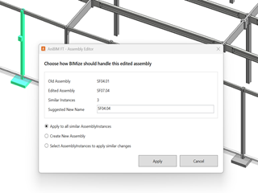

AssemblyBaugruppen
Assembly CreatorBaugruppenersteller
What it doesFunktion
Creates a Revit assembly from the selected production elements and guides you through choosing the main member, assembly name and creation options.Erstellt aus den ausgewählten Produktionselementen eine Revit-Baugruppe und führt durch Hauptbauteil, Baugruppenname und Erstellungsoptionen.
Typical workflowTypischer Ablauf
- Select the elements that must belong to the new assembly.Wählen Sie die Elemente aus, die zur neuen Baugruppe gehören sollen.
- Start Assembly Creator from the Assembly panel.Starten Sie den Baugruppenersteller im Bereich Baugruppen.
- Choose the main member and review the proposed assembly name and options.Wählen Sie das Hauptbauteil und prüfen Sie den vorgeschlagenen Baugruppennamen sowie die Optionen.
- Create the assembly, then verify its members and name in Revit.Erstellen Sie die Baugruppe und kontrollieren Sie anschließend Mitglieder und Namen in Revit.
